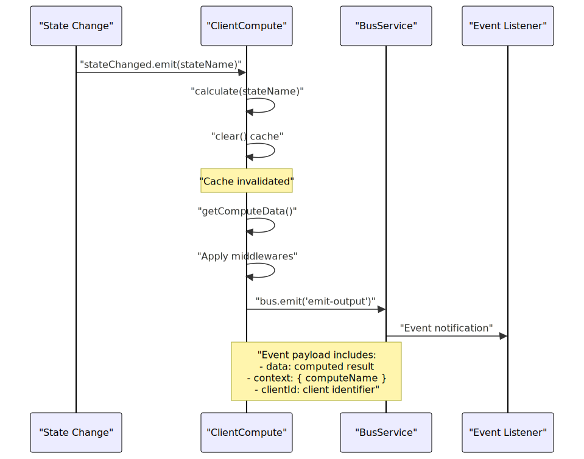

The Compute System manages computational resources, their lifecycle, and state dependencies within the agent-swarm-kit framework. It provides reactive computation capabilities where compute instances automatically recalculate when their dependent states change, supporting both client-specific and shared computational resources with caching, middleware processing, and event-driven updates.
For information about state management that compute instances depend on, see Storage and State. For details about the service architecture that integrates compute services, see Service Architecture.
The Compute System operates on several key abstractions that enable reactive computation:
| Concept | Description | Code Entity |
|---|---|---|
| Compute Instance | A computational unit that produces data based on inputs and state | ClientCompute |
| Compute Name | Unique identifier for a compute configuration | ComputeName |
| Compute Data | The output produced by a compute instance | IComputeData |
| State Dependencies | State names that trigger recalculation when changed | dependsOn: StateName[] |
| Middleware | Functions that process compute data before output | IComputeMiddleware |
| TTL (Time-to-Live) | Caching duration for computed results | ttl: number |
The system distinguishes between client-specific compute instances (isolated per client) and shared compute instances (shared across all clients). Compute instances react to state changes through the IStateChangeContract interface, automatically clearing their cache and recalculating when dependencies update.

Compute System Service Architecture
This diagram shows how compute services are organized in the dependency injection container, with public APIs wrapping connection services that manage actual compute instances.

Compute Instance State Transitions
The lifecycle begins with initialization where the compute instance subscribes to state change notifications through IStateChangeContract bindings. The instance maintains a memoized cache using ttl() from functools-kit, automatically clearing when dependencies change or manual updates occur.
Key lifecycle methods in ClientCompute:
getComputeData() - Retrieves cached or computed datacalculate(stateName) - Triggered by state changesupdate() - Manual cache invalidationdispose() - Resource cleanupCompute instances are configured through IComputeSchema objects that define their behavior, dependencies, and processing pipeline:

Compute Schema and Configuration Flow
The schema validation ensures required fields and proper types:
computeName must be a string identifiergetComputeData must be a function that returns compute datamiddlewares must be an array of processing functionsdependsOn must be an array of valid state namesshared determines if compute is client-specific or sharedCompute instances automatically recalculate when their dependent states change through the reactive binding system:
| Component | Responsibility | Implementation |
|---|---|---|
IStateChangeContract |
Provides state change notifications | stateChanged: TSubject<StateName> |
| State Binding | Maps state names to change contracts | dependsOn.map(stateName => getStateRef()) |
| Cache Invalidation | Clears memoized results on changes | GET_COMPUTE_DATA_FN.clear() |
| Middleware Pipeline | Processes data before output | middlewares.reduce((data, middleware) => middleware(data)) |
The binding process occurs during compute initialization:
// From ClientCompute constructor
this.params.binding.forEach(
({ stateChanged }) =>
(this[DISPOSE_SLOT_FN_SYMBOL] = compose(
this[DISPOSE_SLOT_FN_SYMBOL],
stateChanged.subscribe((stateName) => this.calculate(stateName))
))
);
When a state changes, the subscribed compute instances receive the stateName and trigger recalculation, ensuring data consistency across the system.
The system supports two compute scopes with different isolation and lifecycle characteristics:
| Scope | Client ID | Isolation | Use Case | Service |
|---|---|---|---|---|
| Client-Specific | Actual client ID | Per-client data | User sessions, personal data | ComputeConnectionService |
| Shared | "shared" |
Global data | System metrics, shared resources | SharedComputeConnectionService |

Compute Scope Isolation
Shared compute instances must only depend on shared states, enforced by validation:
// From ComputeValidationService.validate()
if (compute.shared) {
compute.dependsOn?.forEach((stateName) => {
const { shared } = this.stateSchemaService.get(stateName);
if (!shared) {
throw new Error(
`agent-swarm compute ${computeName} depends on state ${stateName} but it is not shared`
);
}
});
}
Compute instances integrate with the event bus system to emit computation results and enable system-wide observability:

Compute Event Flow
Every compute operation emits a structured event through the bus system:
// From GET_COMPUTE_DATA_FN
await self.params.bus.emit<IBusEvent>(self.params.clientId, {
type: "emit-output",
source: "compute-bus",
input: {},
output: {
data: currentData,
},
context: {
computeName: self.params.computeName,
},
clientId: self.params.clientId,
});
This enables monitoring, debugging, and integration with other system components that need to react to compute results.